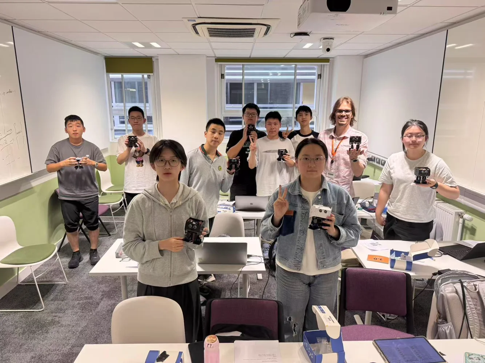

Building the foundations
Preparatory sessions in Huzhou introduced digital and analogue inputs, motors, servos, ultrasonic sensing, and PID feedback principles. I assembled a transport robot and worked with a classmate on basic joystick control.
04 / HUZHOU + UCL / SUMMER 2025
Learning to take a step.
A summer of sensors, actuators, and walking robots: discovering how physical assembly and control code shape each other.

THE STORY
Preparatory sessions in Huzhou introduced digital and analogue inputs, motors, servos, ultrasonic sensing, and PID feedback principles. I assembled a transport robot and worked with a classmate on basic joystick control.
At UCL, I assembled a small legged robot and studied the coordination of hip and ankle movements. Feet collided, friction affected foot lift, and motor issues required reassembly. I tuned a four-step walking sequence before upgrading to a more stable six-step gait.
I developed flowcharts and substantially completed code for target-following and obstacle-avoidance modes. The final exercises connected sensor readings with gait adjustments; the robot finished near the target, although its positioning was still imprecise.